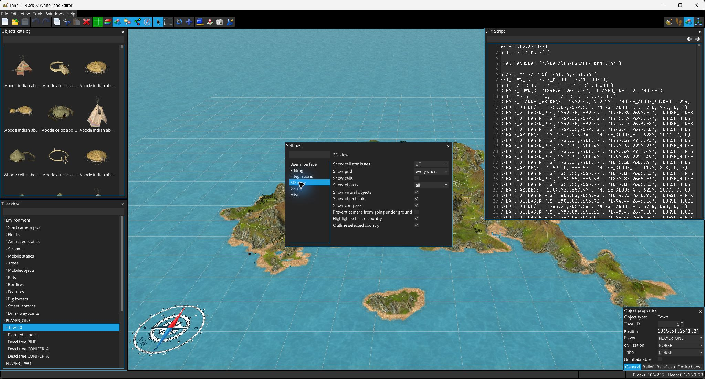

Apri le preferenze da . La finestra Impostazioni è ricercabile e raggruppa le opzioni per categoria.

| Categoria | Impostazione | Significato / predefinito |
|---|---|---|
| Interfaccia utente | Lingua | Lingua di sistema/predefinita al primo avvio; selezionabile tra le traduzioni disponibili. |
| Modifica | Salvataggio automatico | Abilita i normali salvataggi periodici. |
| Modifica | Intervallo autosalvataggio | 1–60 minuti; predefinito 10. |
| Modifica | Numero massimo “annulla” | 1–1000 modifiche; predefinito 50. |
| Integrazioni | Porta HTTP | Predefinita 8086. |
| Integrazioni | Porta editor esterno | Predefinita 8085. |
| Gioco | Cartella del gioco | Cartella usata per individuare le risorse di Black & White e i terreni referenziati dagli script LHX. |
| Vista 3D | Attributi celle | No / Proprietà / Suoni. |
| Vista 3D | Griglia | No / Solo sull’acqua / Ovunque. |
| Vista 3D | Mostra celle | Attiva/disattiva la visualizzazione a livello di cella. |
| Vista 3D | Oggetti | No / Tutti / Costruiti / Pianificati. |
| Vista 3D | Oggetti virtuali | Mostra gli oggetti di supporto/virtuali. |
| Vista 3D | Collegamenti | Mostra i collegamenti tra oggetti. |
| Vista 3D | Bussola | Mostra la bussola. |
| Vista 3D | Evita telecamera sotto terra | Vincola l’orbita per evitare la penetrazione del terreno o occlusioni troppo ravvicinate. |
| Vista 3D | Evidenzia regione selezionata | Ombreggia le regioni non selezionate. |
| Vista 3D | Contorna regione selezionata | Disegna il contorno della regione selezionata. |
| Varie | Numero file recenti | 0–15; predefinito 5. |
| Varie | Archiviazione metadati | Incorporati o file esterno. |
| Varie | Qualità salvataggio immagini | 0,2–1,0; predefinito 0,8. |
| Varie | Autorecovery | Abilita copie temporanee di recupero. |
| Varie | Intervallo autorecovery | 1–10 minuti; predefinito 1. |
| Varie | Popup console | Mostra automaticamente la console quando applicabile. |